汇编基础指令
最后更新时间:
文章总字数:
预计阅读时间:
0x01 什么是汇编语言
汇编语言是最接近机器语言的编程语言，引用百科中的一段话解释为：
汇编语言（assembly language）是一种用于电子计算机、微处理器、微控制器或其他可编程器件的低级语言，亦称为符号语言。在汇编语言中，用助记符代替机器指令的操作码，用地址符号或标号代替指令或操作数的地址。汇编语言又被称为第二代计算机语言。
1.1 汇编语言产生的原因
对于绝大多数人来说，二进制程序是不可读的，当然有能人可以读，比如第一代程序员，但这类人快灭绝了，直接看二进制不容易看出来究竟做了什么事情，比如最简单的加法指令二进制表示为 00000011，如果它混在一大串01字符串中就很难把它找出来，所以汇编语言主要就是为了解决二进制编码的可读性问题。
1.2 汇编与二进制的关系
换句话来说，汇编语言就是把给机器看的二进制编码翻译成人话，汇编指令是机器指令的助记符，与机器指令是一一对应的关系，是一种便于阅读和记忆的书写格式。有效地解决了机器指令编写程序难度大的问题，并且使用编译器，可以很方便的把汇编程序转译成机器指令程序，比如之前提到的 00000011 加法指令，对应的汇编指令是 ADD，在调用汇编器时就会把 ADD 翻译成 00000011。
0x02 寄存器
说到汇编指令不得不提到寄存器，寄存器本身是用来存数据的，因为 CPU 本身只负责逻辑运算，数据需要单独储存在其他的地方，但是对于不熟悉寄存器的人来说会有疑惑，数据不是存在硬盘上吗？或者说数据不是存在内存中吗？这些想法都没错，那么寄存器是用来做什么的呢？
2.1 寄存器作用
其实硬盘、内存都是用来存储数据的，但是 CPU 的运算速度远高于内存的读写速度，更不用说从硬盘上取数据了，所以为了避免被拖慢速度影响效率，CPU 都自带一级缓存和二级缓存，一些 CPU 甚至增加了三级缓存，从这些缓存中读写数据要比内存快很多，但是还是无法使用飞速运转的 CPU，所以才会有寄存器的存在。
寄存器不是后来增加的，在最初的计算中就已经设计出来，相比而言，多级缓存出现的更晚一些，通常那些最频繁读写的数据都会被放在寄存器里面，CPU 优先读写寄存器，再通过寄存器、缓存跟内存来交换数据，达到缓冲的目的，因为可以通过名称访问寄存器，这样访问速度是最快的，因此也被称为零级缓存。
2.2 存取速度比较
通过上面的叙述我们可以知道存取速度从高到低分别是: 寄存器 > 1级缓存 > 2级缓存 > 3级缓存 > 内存 > 硬盘，关于它们的存取速度，举个例子很容易就能明白了，比如我们做菜（CPU工作）时，取手中（寄存器）正拿着的肉和蔬菜肯定是最快的，如果没有就需要把案板上（1级缓存）处理好的菜拿过来，如果案板上没有就在更远一点的洗菜池（2级缓存）中找一找，还没找到的话就要到冰箱（3级缓存）中看一看了，这时发现家里真没有，那去楼下的菜店（内存）去买点吧，转了一圈发现没有想要的，最后还是开车去农贸市场（硬盘）买吧。
通过上面这个例子应该能明白它们的速度关系了，既然缓存这么快，为什么不用缓存代替内存，或者将2、3级缓存都换成1级缓存呢？这里边有一个成本问题，速度越快对应着价格越高，如果你买过机械硬盘和固态硬盘应该很容易就理解了。
2.3 寄存器分类
常用的 x86 CPU 寄存器有8个：EAX 、EBX、ECX、EDX、EDI、ESI、EBP、ESP，据说现在寄存器总数已经超过100个了，等我找到相关资料再来补充，上面这几个寄存器是最常用的，这些名字也常常出现在汇编的代码中。
其中AX、BX、CX、DX是通用寄存器，存放一般性数据。1个16位寄存器可以存储16位的数据。
为了向上一代CPU兼容，这4个寄存器可以分为AH、AL，BH、BL，CH、CL，DH、DL。
我们常说的32位、64位 CPU 是指数据总线的宽度或根数，而寄存器是暂存数据和中间结果的单元，因此寄存器的位数也就是处理数据的长度与数据总线的根数是相同的，所以32位 CPU 对应的寄存器也应该是32位的。
2.4 常用寄存器用途
上面提到大8个寄存器都有其特定的用途，我们以32位 CPU 为例简单说明下这些寄存器的作用，整理如下表：
| 寄存器 | 含义 | 用途 | 包含寄存器 |
|---|---|---|---|
| EAX | 累加(Accumulator)寄存器 | 常用于乘、除法和函数返回值 | AX(AH、AL) |
| EBX | 基址(Base)寄存器 | 常做内存数据的指针, 或者说常以它为基址来访问内存. | BX(BH、BL) |
| ECX | 计数器(Counter)寄存器 | 常做字符串和循环操作中的计数器 | CX(CH、CL) |
| EDX | 数据(Data)寄存器 | 常用于乘、除法和 I/O 指针 | DX(DH、DL) |
| ESI | 来源索引(Source Index)寄存器 | 常做内存数据指针和源字符串指针 | SI |
| EDI | 目的索引(Destination Index)寄存器 | 常做内存数据指针和目的字符串指针 | DI |
| ESP | 堆栈指针(Stack Point)寄存器 | 只做堆栈的栈顶指针; 不能用于算术运算与数据传送 | SP |
| EBP | 基址指针(Base Point)寄存器 | 只做堆栈指针, 可以访问堆栈内任意地址, 经常用于中转 ESP 中的数据, 也常以它为基址来访问堆栈; 不能用于算术运算与数据传送 | BP |
2.5 寄存器EAX、AX、AH、AL的关系
在上面的图标中每个常用寄存器后面还有其他的名字，它们是同一个寄存器不同用法下的不同名字，比如在32位 CPU 上，EAX是32位的寄存器，而AX是EAX的低16位，AH是AX的高8位，而AL是AX的低8位，它们的对照关系如下:
1 | |
2.6 物理地址
CPU要想访问内存单元，就要给出内存单元的物理地址，内存是一个一维的线性空间，每一个内存单元都有唯一的地址，这个地址就是物理地址。
8086CPU是16位结构的，其数据总线是16位宽，但地址总线是20位，1MB寻址能力。
但内部是16位结构，内部一次性处理、传输地址为16位，所以在内部采用2个16位地址合成方式形成一个20位的物理地址进行内存寻址。
物理地址 = 段地址 * 16 + 偏移地址(段地址*16即左移4位)
其本质含义是：CPU在访问内存时，用一个基础地址(段地址*16)和相对于基础地址的偏移地址相加，得到物理地址。
由于偏移地址为16位，16位地址的寻址能力是64KB，所以一个段的长度最大为64K。
CPU可以用不同的段地址和偏移地址形成同一个物理地址。
2.7 段寄存器
8086CPU有4个段寄存器：CS、DS、SS、ES。
CS为代码段寄存器，IP为指令指针寄存器。
任意时刻，CPU将CS:IP指向的内容当做当前指令执行。
8086CPU工作过程：
- 从CS:IP指向的内存单元读指令，指令进指令缓冲器
- IP指向下一条指令
- 执行指令，跳到步骤1，重复这个过程
CPU根据什么将内存中的信息看做指令？答案是CPU将CS:IP指向的内存单元的内容看做指令。
使用jmp 段地址:偏移地址或jmp 寄存器修改CS:IP或IP的地址。
在编程时，根据需要可以将长度为N的一组代码，存在一组连续的内存单元中，这段内存单元叫做代码段。
同样的，可以根据需要将长度为N的一组内存单元，专门存储数据，这段内存单元叫做数据段。
8086CPU自动取DS寄存器中的数据为内存单元的段地址。
例如mov [0] cs表示将寄存器cs的值复制到段地址为DS偏移地址为0的内存单元中。
字在内存中存储时，用2个地址连续的内存单元存放，字的低字节放在低地址单元，高字节放在高地址单元。
2.8 标志寄存器
标志寄存器作用：
- 存储相关指令某些执行结果
- 为CPU执行相关指令提供行为依据
- 控制CPU相关工作方式
8086CPU中有个叫flag寄存器，共16位，每一位代表专门的含义：
- 第6位
ZF，零标志位：相关指令执行后，结果为0则zf=1，不为0则zf=0 - 第2位
PF，奇偶标志位：相关指令执行后，结果所有bit位中1的个数为偶数，pf=1，否则pf=0 - 第7位
SF，符号标志位：相关指令执行后，结果是否为负，结果为负sf=1，否则sf=0 - 第0位
CF，进位标志位：对于无符号数运算，CF记录运算结果最高有效位向更高位的进位值/借位值 - 第11位
OF，溢出标志位：对于有符号数运算，是否发生溢出，溢出则of=1，否则of=0 - 第10位
DF，方向标志位：在串处理指令中，控制操作后si、di增减，df=0每次操作后si、di递增，否则递减
0x03 内存模型：Heap
寄存器只能存放很少量的数据，大多数时候，CPU 要指挥寄存器，直接跟内存交换数据。所以，除了寄存器，还必须了解内存怎么储存数据。
程序运行的时候，操作系统会给它分配一段内存，用来储存程序和运行产生的数据。这段内存有起始地址和结束地址，比如从0x1000到0x8000，起始地址是较小的那个地址，结束地址是较大的那个地址。
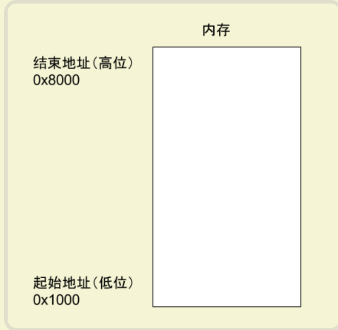
程序运行过程中，对于动态的内存占用请求（比如新建对象，或者使用malloc命令），系统就会从预先分配好的那段内存之中，划出一部分给用户，具体规则是从起始地址开始划分（实际上，起始地址会有一段静态数据，这里忽略）。举例来说，用户要求得到10个字节内存，那么从起始地址0x1000开始给他分配，一直分配到地址0x100A，如果再要求得到22个字节，那么就分配到0x1020。
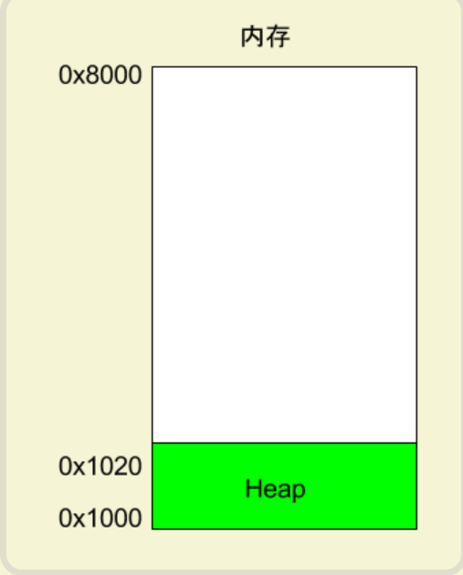
这种因为用户主动请求而划分出来的内存区域，叫做 Heap（堆）。它由起始地址开始，从低位（地址）向高位（地址）增长。Heap 的一个重要特点就是不会自动消失，必须手动释放，或者由垃圾回收机制来回收。
0x04 内存模型：Stack
除了 Heap 以外，其他的内存占用叫做 Stack（栈）。简单说，Stack 是由于函数运行而临时占用的内存区域。
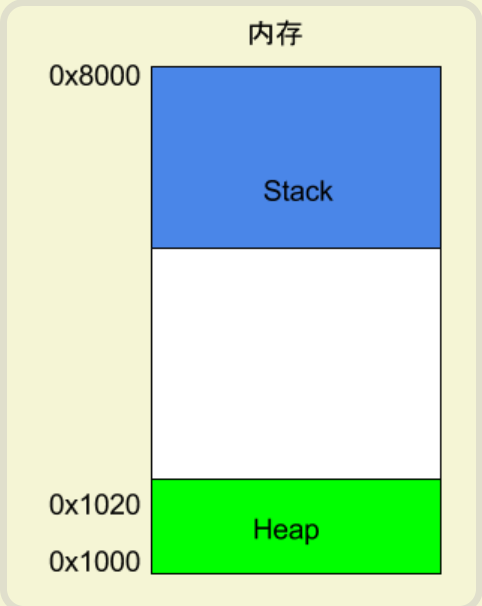
请看下面的例子。
1 | |
上面代码中，系统开始执行main函数时，会为它在内存里面建立一个帧（frame），所有main的内部变量（比如a和b）都保存在这个帧里面。main函数执行结束后，该帧就会被回收，释放所有的内部变量，不再占用空间。
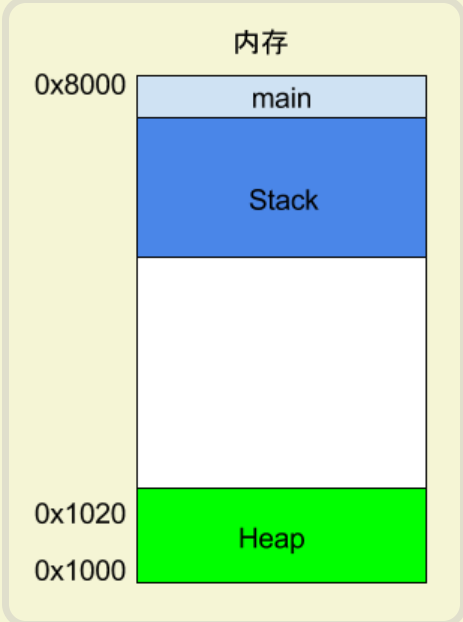
如果函数内部调用了其他函数，会发生什么情况？
1 | |
上面代码中，main函数内部调用了add_a_and_b函数。执行到这一行的时候，系统也会为add_a_and_b新建一个帧，用来储存它的内部变量。也就是说，此时同时存在两个帧：main和add_a_and_b。一般来说，调用栈有多少层，就有多少帧。
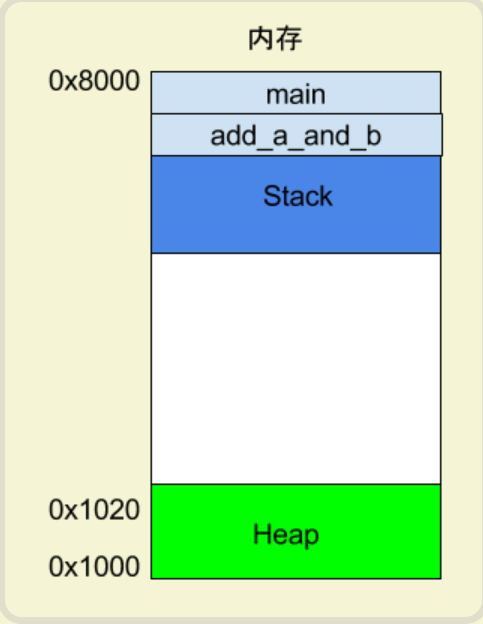
等到add_a_and_b运行结束，它的帧就会被回收，系统会回到函数main刚才中断执行的地方，继续往下执行。通过这种机制，就实现了函数的层层调用，并且每一层都能使用自己的本地变量。
所有的帧都存放在 Stack，由于帧是一层层叠加的，所以 Stack 叫做栈。生成新的帧，叫做"入栈"，英文是 push；栈的回收叫做"出栈"，英文是 pop。Stack 的特点就是，最晚入栈的帧最早出栈（因为最内层的函数调用，最先结束运行），这就叫做"后进先出"的数据结构。每一次函数执行结束，就自动释放一个帧，所有函数执行结束，整个 Stack 就都释放了。
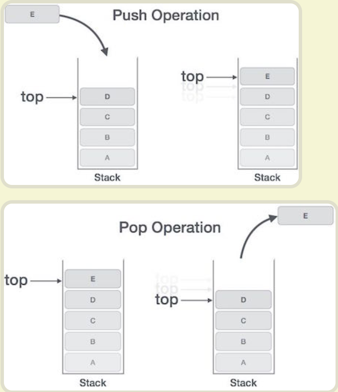
Stack 是由内存区域的结束地址开始，从高位（地址）向低位（地址）分配。比如，内存区域的结束地址是0x8000，第一帧假定是16字节，那么下一次分配的地址就会从0x7FF0开始；第二帧假定需要64字节，那么地址就会移动到0x7FB0。
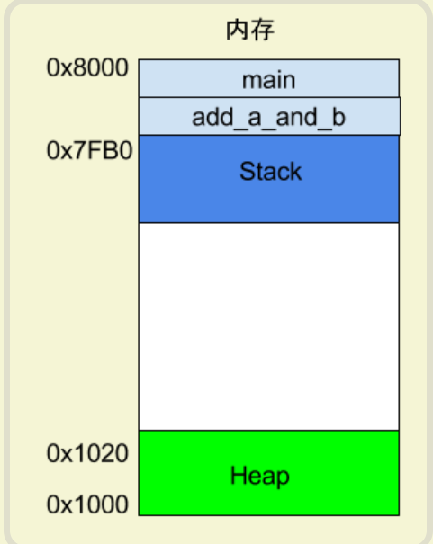
8086CPU提供入栈和出栈的指令：PUSH和POP，任意时刻，寄存器SS:SP指向栈顶元素。
push指令执行：
- SP=SP-2
- 向SS:SP指向的字单元送入数据
pop指令执行：
- 从SS:SP指向的字单元读数据
- SP=SP+2
在编程时，要时刻注意栈顶越界的问题，用栈来可以暂存以后需要恢复的寄存器中的内容。
push和pop实质上是一种内存传送指令，同样的，编程时我们可以将长度为N的一组连续内存单元当做栈空间使用，叫做栈段。
一个栈段的容量最大为64KB。
0x05 CPU 指令
5.1 实例
了解寄存器和内存模型以后，就可以来看汇编语言到底是什么了。下面是一个简单的程序example.c。
1 | |
gcc 将这个程序转成汇编语言。
1 | |
上面的命令执行以后，会生成一个文本文件example.s，里面就是汇编语言，包含了几十行指令。这么说吧，一个高级语言的简单操作，底层可能由几个，甚至几十个 CPU 指令构成。CPU 依次执行这些指令，完成这一步操作。
example.s经过简化以后，大概是下面的样子。
1 | |
可以看到，原程序的两个函数add_a_and_b和main，对应两个标签_add_a_and_b和_main。每个标签里面是该函数所转成的 CPU 运行流程。
每一行就是 CPU 执行的一次操作。它又分成两部分，就以其中一行为例。
1 | |
这一行里面，push是 CPU 指令，%ebx是该指令要用到的运算子。一个 CPU 指令可以有零个到多个运算子。
下面我就一行一行讲解这个汇编程序，建议读者最好把这个程序，在另一个窗口拷贝一份，省得阅读的时候再把页面滚动上来。
5.2 push 指令
根据约定，程序从_main标签开始执行，这时会在 Stack 上为main建立一个帧，并将 Stack 所指向的地址，写入 ESP 寄存器。后面如果有数据要写入main这个帧，就会写在 ESP 寄存器所保存的地址。
然后，开始执行第一行代码。
1 | |
push指令用于将运算子放入 Stack，这里就是将3写入main这个帧。
虽然看上去很简单，push指令其实有一个前置操作。它会先取出 ESP 寄存器里面的地址，将其减去4个字节，然后将新地址写入 ESP 寄存器。使用减法是因为 Stack 从高位向低位发展，4个字节则是因为3的类型是int，占用4个字节。得到新地址以后， 3 就会写入这个地址开始的四个字节。
1 | |
第二行也是一样，push指令将2写入main这个帧，位置紧贴着前面写入的3。这时，ESP 寄存器会再减去 4个字节（累计减去8）。
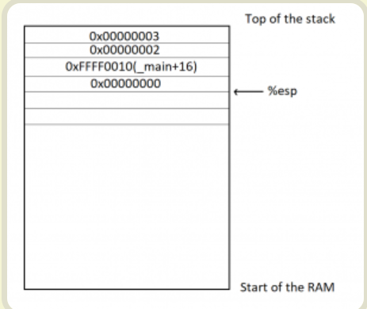
5.3 call 指令
第三行的call指令用来调用函数。
1 | |
上面的代码表示调用add_a_and_b函数。这时，程序就会去找_add_a_and_b标签，并为该函数建立一个新的帧。
下面就开始执行_add_a_and_b的代码。
1 | |
这一行表示将 EBX 寄存器里面的值，写入_add_a_and_b这个帧。这是因为后面要用到这个寄存器，就先把里面的值取出来，用完后再写回去。
这时，push指令会再将 ESP 寄存器里面的地址减去4个字节（累计减去12）。
5.4 mov 指令
mov指令用于将一个值写入某个寄存器。
1 | |
这一行代码表示，先将 ESP 寄存器里面的地址加上8个字节，得到一个新的地址，然后按照这个地址在 Stack 取出数据。根据前面的步骤，可以推算出这里取出的是2，再将2写入 EAX 寄存器。
下一行代码也是干同样的事情。
1 | |
上面的代码将 ESP 寄存器的值加12个字节，再按照这个地址在 Stack 取出数据，这次取出的是3，将其写入 EBX 寄存器。
5.5 add 指令
add指令用于将两个运算子相加，并将结果写入第一个运算子。
1 | |
上面的代码将 EAX 寄存器的值（即2）加上 EBX 寄存器的值（即3），得到结果5，再将这个结果写入第一个运算子 EAX 寄存器。
5.6 pop 指令
pop指令用于取出 Stack 最近一个写入的值（即最低位地址的值），并将这个值写入运算子指定的位置。
1 | |
上面的代码表示，取出 Stack 最近写入的值（即 EBX 寄存器的原始值），再将这个值写回 EBX 寄存器（因为加法已经做完了，EBX 寄存器用不到了）。
注意，pop指令还会将 ESP 寄存器里面的地址加4，即回收4个字节。
5.7 ret 指令
ret指令用于终止当前函数的执行，将运行权交还给上层函数。也就是，当前函数的帧将被回收。
1 | |
可以看到，该指令没有运算子。
随着add_a_and_b函数终止执行，系统就回到刚才main函数中断的地方，继续往下执行。
1 | |
上面的代码表示，将 ESP 寄存器里面的地址，手动加上8个字节，再写回 ESP 寄存器。这是因为 ESP 寄存器的是 Stack 的写入开始地址，前面的pop操作已经回收了4个字节，这里再回收8个字节，等于全部回收。
1 | |
最后，main函数运行结束，ret指令退出程序执行。
0x06 汇编语言指令
终于说到汇编常用指令了，因为 linux 和 windows 下的汇编语法是有些不同的，所以下面我们先通过 windows 下的汇编指令来简单学习一下，后续再来比较两者的不同。
6.1 数据传送指令
| 指令 | 名称 | 示例 | 备注 |
|---|---|---|---|
| MOV | 传送指令 | MOV dest, src | 将数据从src移动到dest |
| PUSH | 进栈指令 | PUSH src | 把源操作数src压入堆栈 |
| POP | 出栈指令 | POP dest | 从栈顶弹出字数据到dest |
6.2 算术运算指令
| 指令 | 名称 | 示例 | 备注 |
|---|---|---|---|
| ADD | 加法指令 | ADD dest, src | 在dest基础上加src |
| SUB | 减法指令 | SUB dest, src | 在dest基础上减src |
| INC | 加1指令 | INC dest | 在dest基础上加1 |
| DEC | 减1指令 | DEC dest | 在dest基础上减1 |
6.3 逻辑运算指令
| 指令 | 名称 | 示例 | 备注 |
|---|---|---|---|
| NOT | 取反运算指令 | NOT dest | 把操作数dest按位取反 |
| AND | 与运算指令 | AND dest, src | 把dest和src进行与运算之后送回dest |
| OR | 或运算指令 | OR dest, src | 把dest和src进行或运算之后送回dest |
| XOR | 异或运算 | XOR dest, src | 把dest和src进行异或运算之后送回dest |
6.4 循环控制指令
| 指令 | 名称 | 示例 | 备注 |
|---|---|---|---|
| LOOP | 计数循环指令 | LOOP label | 使ECX的值减1，当ECX的值不为0的时候跳转至label，否则执行LOOP之后的语句 |
6.5 转移指令
| 指令 | 名称 | 示例 | 备注 |
|---|---|---|---|
| JMP | 无条件转移指令 | JMP lable | 无条件地转移到标号为label的位置 |
| CALL | 过程调用指令 | CALL labal | 直接调用label |
| JE | 条件转移指令 | JE lable | zf =1 时跳转到标号为label的位置 |
| JNE | 条件转移指令 | JNE lable | zf=0 时跳转到标号为label的位置 |
6.6 JCC指令组
J是指jump。CC是条件，该条件与EFL标志寄存器中的标志位息息相关。通过获取EFL标志位的值，判断是否满足条件而是否执行JUMP操作。对应了高级语言中的比较运算。
| JCC指令 | 中文含义 | 检查符号位 | 典型C应用 |
|---|---|---|---|
| JZ/JE | 若为0则跳转；若相等则跳转 | ZF=1 | if (i == j);if (i == 0); |
| JNZ/JNE | 若不为0则跳转；若不相等则跳转 | ZF=0 | if (i != j);if (i != 0); |
| JS | 若为负则跳转 | SF=1 | if (i < 0); |
| JNS | 若为非负数则跳转 | SF=0 | if (i >= 0); |
| JP/JPE | 若1出现次数为偶数则跳转 | PF=1 | (null) |
| JNP/JPO | 若1出现次数为奇数则跳转 | PF=0 | (null) |
| JO | 若溢出则跳转 | OF=1 | (null) |
| JNO | 若无溢出则跳转 | OF=0 | (null) |
| JC/JB/JNAE | 若进位则跳转；若低于则跳转；若不高于等于则跳转 | CF=1 | if (i < j); |
| JNC/JNB/JAE | 若无进位则跳转；若不低于则跳转；若高于等于则跳转； | CF=0 | if (i >= j); |
| JBE/JNA | 若低于等于则跳转；若不高于则跳转 | ZF=1或CF=1 | if (i <= j); |
| JNBE/JA | 若不低于等于则跳转；若高于则跳转 | ZF=0或CF=0 | if (i > j); |
| JL/JNGE | 若小于则跳转；若不大于等于则跳转 | SF != OF | if (si < sj); |
| JNL/JGE | 若不小于则跳转；若大于等于则跳转； | SF = OF | if (si >= sj); |
| JLE/JNG | 若小于等于则跳转；若不大于则跳转 | ZF != OF 或 ZF=1 | if (si <= sj); |
| JNLE/JG | 若不小于等于则跳转；若大于则跳转 | SF=0F 且 ZF=0 | if(si>sj)ag |
6.7 堆栈指令
ESP：栈顶指针寄存器，记录当前使用的地址，栈的内存空间是存大地址开始使用的。EBP：栈底指针寄存器，记录栈开始的位置。
我们可以使用MOV指令，将数据MOV到ESP寄存器指定的位置，然后使用SUB或者ADD指令，将ESP寄存器的值偏移对应的数据宽度值，实现数据的入栈和出栈操作。基于这样的原理，汇编中提供了PUSH和POP命令
1 | |
6.8 跳转指令
- JMP：将程序跳转到指定的地址执行，通过改变EIP中的值实现
- CALL：将程序跳转到指定的地址，跳转前将下一次执行的地址保存到栈中，用来记录跳转前的位置。然后改变EIP中的值使得cpu去执行其他地址的指令。当执行结束需要返回原来的地址时，从栈中取出跳转签到的地址，赋值到EIP寄存器中即可回到跳转前的状态。
- RETN：从栈中取出保存的地址，赋值给EIP，用作下次执行
使用这两个指令需要理解EIP寄存器的作用。当一个程序被编译完成之后，程序的执行方法即已经确定，即A=>B=>C的顺序进行执行，且他们使用的内存空间说连续的，计算机执行一行指令后，下一次要执行的内容都保存在EIP寄存器保存的地址处。所以EIP寄存器指向的内容，就是程序下一次执行的指令。也就是说，A执行时，EIP寄存器中保存的是B的地址，这样执行A后将会获取B的信息并执行。如果A是一个JMP或者CALL指令，执行依次JMP EIP D，这条指令表示将EIP中的值改为D的地址，所以下一次执行的即为D指令。由此实现了跳转。这样的方式当程序跳转到D指令后，程序无法返回B指令了，因为我们找不到B的地址，想要重新回到B指令，需要将B的地址保存，使用时取回即可，通常是将其入栈。这样就和CALL指令的使用方式相同了。
1 | |
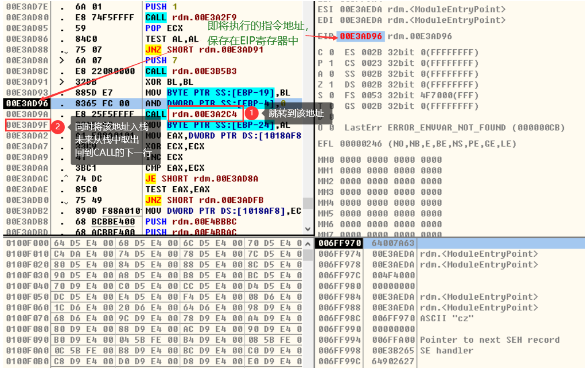
0x07 linux 和 windows 下汇编的区别
前面说到 linux 和 windows 下的汇编语法是不同的，其实两种语法的不同和系统不同没有绝对的关系，一般在 linux 上会使用 gcc/g++ 编译器，而在 windows 上会使用微软的 cl 也就是 MSBUILD，所以产生不同的代码是因为编译器不同，gcc 下采用的是AT&T的汇编语法格式，MSBUILD 采用的是Intel汇编语法格式。
| 差异 | Intel | AT&T |
|---|---|---|
| 引用寄存器名字 | eax | %eax |
| 赋值操作数顺序 | mov dest, src | movl src, dest |
| 寄存器、立即数指令前缀 | mov ebx, 0xd00d | movl $0xd00d, %ebx |
| 寄存器间接寻址 | [eax] | (%eax) |
| 数据类型大小 | 操作码后加后缀字母，“l” 32位，“w” 16位，“b” 8位（mov dx, word ptr [eax]） | 操作数前面加dword ptr， word ptr，byte ptr的格式 （movb %bl %al） |
0x08 什么是字长
内存以字节为单位。 一个字节是 8 个比特位，可以表示 2^8 = 256 个数。大小为 8 位的二进制数是从 0 开始到 255 这 256 个值中的一个。 两个字节被称为一个字（WORD），两个字被称为四个字节（32位）也即双字（DWORD），四字 （QWORD）是八个字节（64 位）。 这些连续的字节要按什么样的顺序排列和解释，这就涉及到端序的范畴了。 字节的排列方式有两个通用规则: 大端序（Big-Endian）与小端序（Little-Endian）
1 | |
0x09 大端与小端的比较
9.1 概念
字节序指的是，多字节数据的内存排列顺序。这样说比较抽象，使用图形解释就很好懂。
内存好比一排房间，每个字节是一间房。每间房都有门牌号（内存地址），从0号开始，然后是1号、2号…
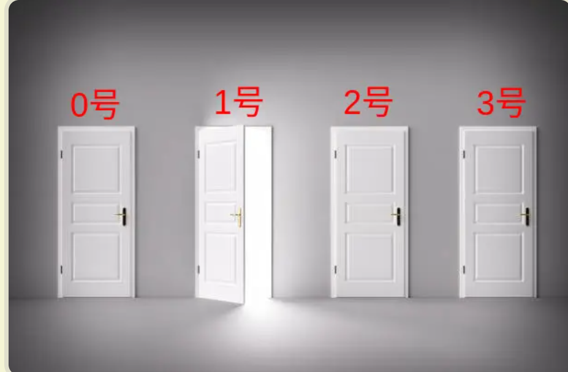
0号字节的地址小，称为低位内存；3号字节的地址大，称为高位内存。
现在有一个数值abcd要放进这些房间，每个房间放一个数字，那么有两种放法。
第一种放法是，第一位a放在低位地址（0号），最后一位d放在高位地址（3号）。
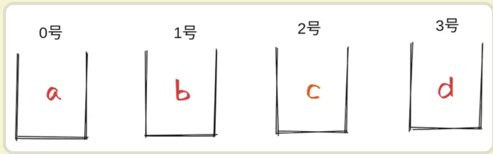
这种排列称为"大端序"（big-endian，简称 BE），即大头在前，因为a是abcd的大头（最重要的数字）。
第二种放法是，第一位a放在高位地址（3号地址），最后一位d放在低位地址（0号地址）。
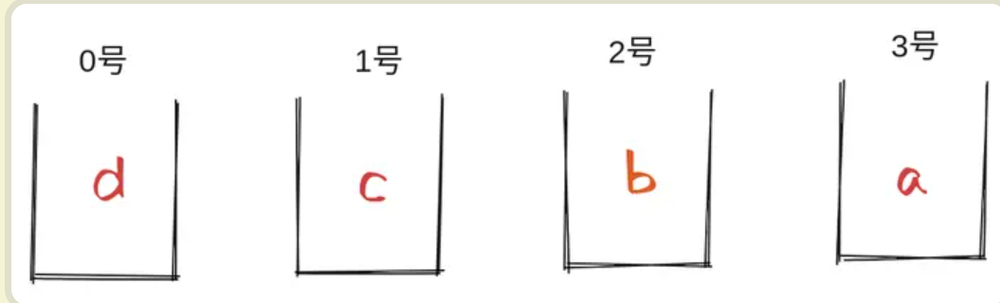
这种排列称为"小端序"（little-endian，简称 LE），即小头d在前。
大端序和小端序合称字节序，这两个名字来自18世纪的英国小说《格列佛游记》。某国分成两派，一派认为鸡蛋应该从大头吃起，称为"大端派"；另一派认为，鸡蛋应该从小头吃起，称为"小端派"。两派相执不下，谁也无法说服谁，最后甚至为此交战。
9.2 可读性
对于人类来说，不同字节序的可读性是不一样的。大部分国家的阅读习惯是从左到右阅读。
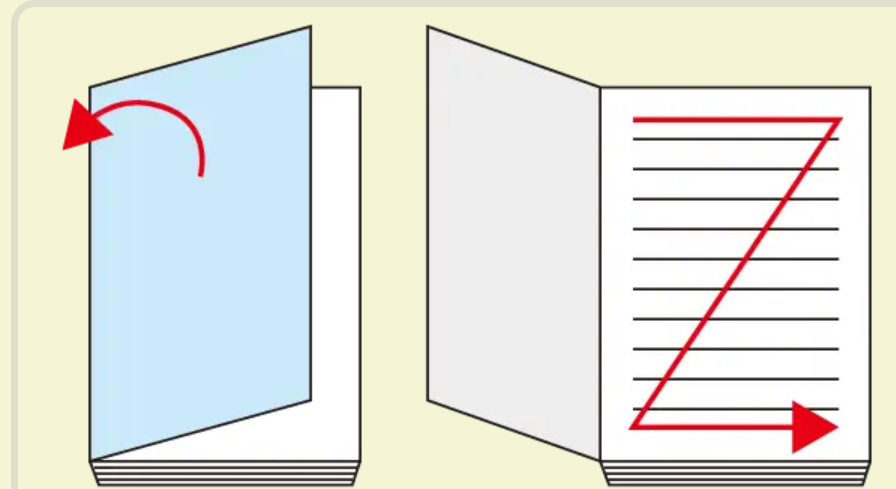
大端序的最高位在左边，最低位在右边，符合阅读习惯。所以，对于这些国家的人来说，从左到右的大端序的可读性更好。
但是现实中，从右到左的小端序虽然可读性差，但应用更广泛，x86 和 ARM 这两种 CPU 架构都采用小端序，这是为什么？
或者换一种问法，两种不同的字节序为什么会并存，统一规定只使用一种，难道不是更方便吗？
原因是它们有各自的适用场景，某些场景大端序有优势，另一些场景小端序有优势，下面就逐一分析。
9.3 检查奇偶性
小端序优势最明显的，大概就是检查奇偶性，即通过查看个位数，确定某个数字是奇数还是偶数。
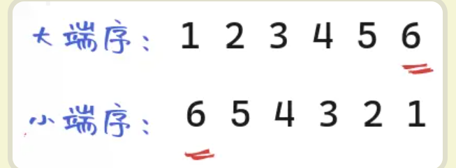
以123456为例，大端序从左到右排列，计算机必须一直读到最后一位的个位数6，才能确定这是偶数。
小端序是从右到左排列，个位数在第一位。所以，只要读取第一位，就能确定它是偶数。
9.4 检查正负号
一个类似的场景是检查正负号，确定一个数是正数还是负数。
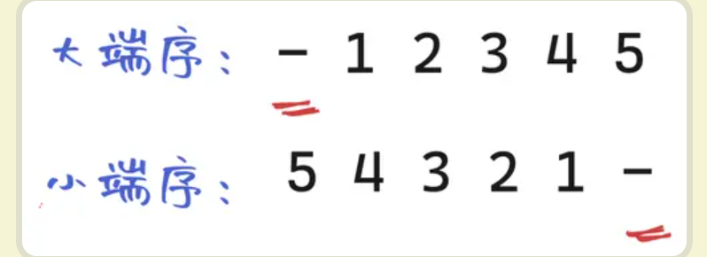
大端序的符号位在左边第一位，小端序的符号位在右边最后一位。所以，大端序有优势，只看第一位就能知道是不是负数。
9.5 比较大小
下一个操作是比较大小。现在有三个数字，需要比较大小：43662576，594，2。
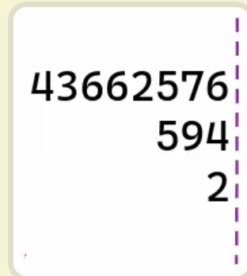
上图是大端序排列，因为是从左到右排列，所以三个数字在右边个位数对齐。比较大小时，计算机就不得不读取每一个数的所有位，直到个位数，再进行比较。
如果改成小端序，就是下面的排列方式。
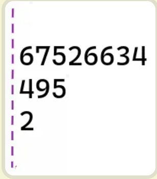
小端序是从右到左，所以三个数字在第一位对齐。计算机就不需要读取所有位，哪个数字先读不到下一位，就是最小的。比如，2这个数字就没有第二位，所以读到第二位时，就知道它是最小的。
所以，比较大小时，小端序有优势。
9.6 乘法
接下来，再看乘法操作。
乘法是逐位相乘，每一轮乘法都要向前进位。
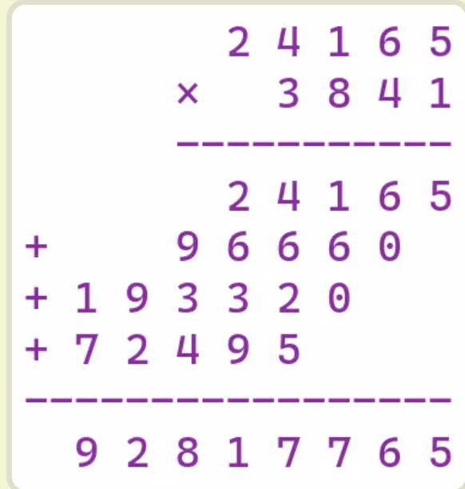
上图是大端序的24165乘以3841。大端序的乘法是向左进位，也就是向左边扩展，必须等到每一轮的结果都出来（上例是四轮），再相加统一写入内存。
如果改成小端序的乘法，就不需要等待下一轮的结果，每一轮都可以直接写入内存。
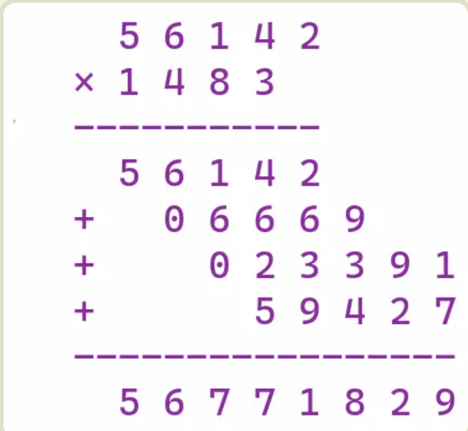
上图是小端序的24165乘以3841。小端序的乘法是向右进位，也就是向右边扩展，左边的边界不变。每一轮结果写入内存后，就不需要移动，后面有变化只需要改动对应的位就行了。
因此，小端序的乘法有明显优势。
9.7 任意精度整数
上一个例子的从低位开始计算的特性，对于任意精度整数特别有用。任意精度整数又称大整数，可以存放任意大小的整数。
它的内部实现是把整数分成一个个较小的单位，通常是 uint32（无符号32位整数）或 uint64（无符号64位整数），按顺序组合在一起。
如果是大端序，第一个 u64 就是这个整数最大的部分。运算时，一旦这个数发生变化，需要进位，后面的所有位都必须移动和改写。小端序发生进位时，往往就不需要所有位移动。
小端序的另一个好处是，如果逐字节的运算从个位数开始（比如乘法和加法），可以从左到右依次运算一个个 u64，算完上一个再读取下一个。大端序就不行，必须读取整个数以后再进行运算。
9.8 更改类型
最后一个例子是，C 语言有一种 cast 操作，可以强制改变变量的数据类型，比如把32位整数强行改变为16位整数。
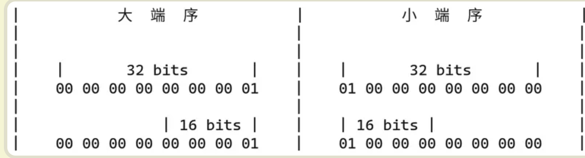
上图中，32位整数0x00000001更改为16位整数0x0001，大端序是截去前面两个字节，这时指向这个地址的指针必须向后移动两个字节。
小端序就没有这个问题，截去的是后面两个字节，第一位的地址是不变的，所以指针不需要移动。
9.9 总结
综上所述，大端序和小端序各自的优势如下。
如果需要逐位运算，或者需要到从个位数开始运算，都是小端序占优势。反之，如果运算只涉及到高位，或者数据的可读性比较重要，则是大端序占优势。
0x10 总结
- 汇编指令是机器指令的助记符，与机器指令是一一对应的
- AT&T的汇编语法格式和Intel汇编语法格式的是不同的
- 常用寄存器：
EAX、EBX、ECX、EDX、EDI、ESI、EBP、ESP - 存取速度从高到低分别是:
寄存器 > 1级缓存 > 2级缓存 > 3级缓存 > 内存 > 硬盘 - 常用的汇编指令：
mov、je、jmp、call、add、sub、inc、dec、and、or
0x11 冯诺依曼结构体系
11.1 计算机的基本硬件组成
早年，要自己组装一台计算机，要先有三大件，CPU、内存和主板。
在这三大件中，我们首先要说的是CPU，它是计算机最重要的核心配件，全名你肯定知道，叫中央处理器（Central Processing Unit）。为什么说 CPU 是“最重要”的呢？因为计算机的所有“计算”都是由 CPU 来进行的。自然，CPU 也是整台计算机中造价最昂贵的部分之一。
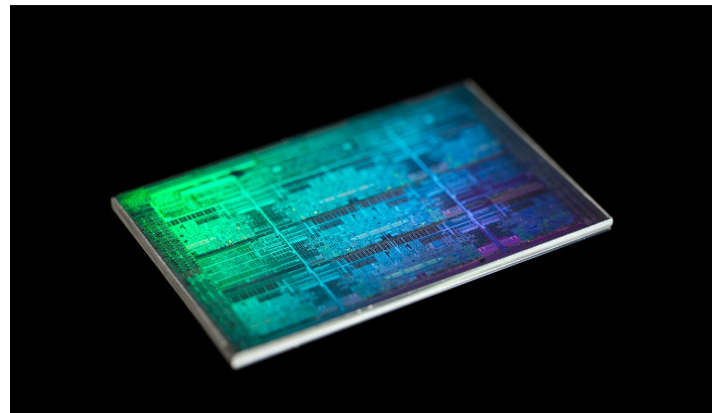
CPU 是一个超级精细的印刷电路版，图片来源
第二个重要的配件，就是内存（Memory）。你撰写的程序、打开的浏览器、运行的游戏，都要加载到内存里才能运行。程序读取的数据、计算得到的结果，也都要放在内存里。内存越大，能加载的东西自然也就越多。
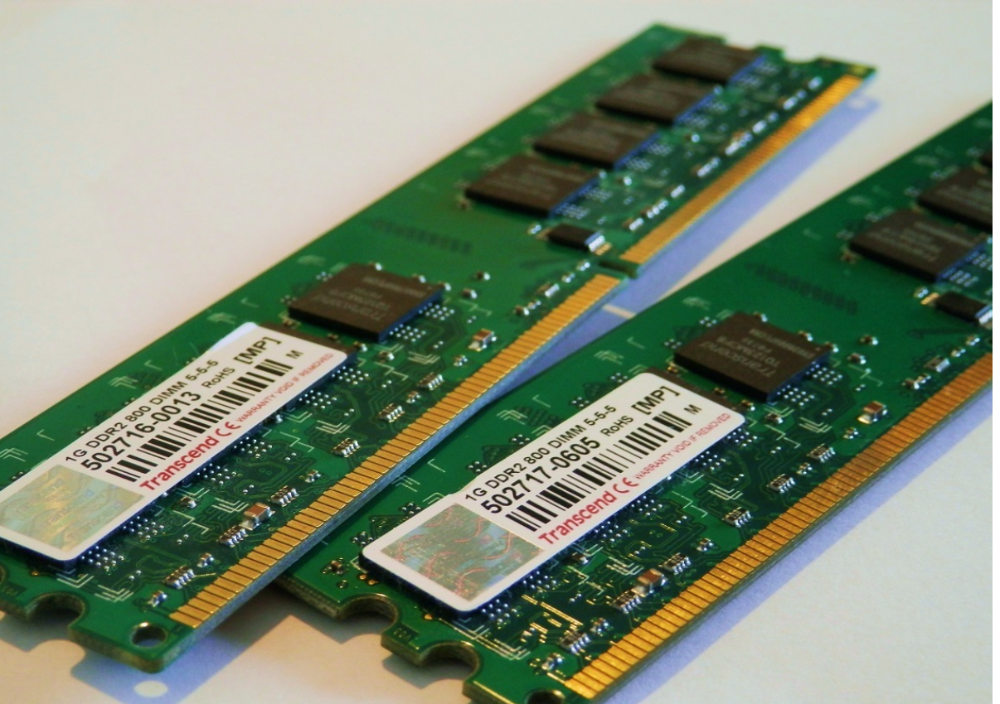
内存通常直接可以插在主板上，图片来源
存放在内存里的程序和数据，需要被 CPU 读取，CPU 计算完之后，还要把数据写回到内存。然而 CPU 不能直接插到内存上，反之亦然。于是，就带来了最后一个大件——主板（Motherboard）。
主板是一个有着各种各样，有时候多达数十乃至上百个插槽的配件。我们的 CPU 要插在主板上，内存也要插在主板上。主板的芯片组（Chipset）和总线（Bus）解决了 CPU 和内存之间如何通信的问题。芯片组控制了数据传输的流转，也就是数据从哪里到哪里的问题。总线则是实际数据传输的高速公路。因此，总线速度（Bus Speed）决定了数据能传输得多快。
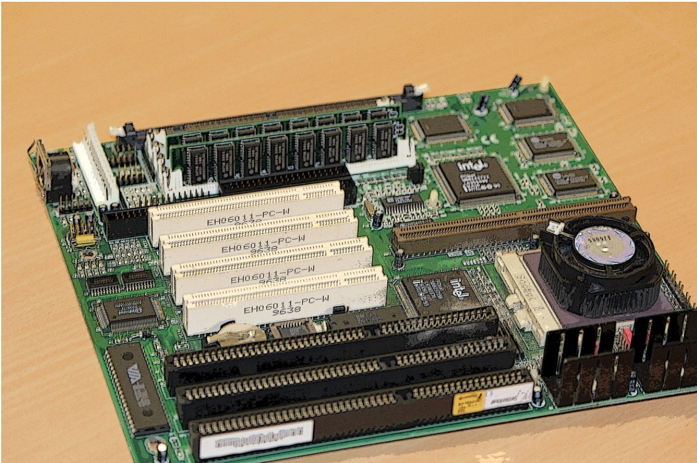
计算机主板上通常有着各种各样的插槽，图片来源
有了三大件，只要配上电源供电，计算机差不多就可以跑起来了。但是现在还缺少各类输入（Input）/ 输出（Output）设备，也就是我们常说的I/O 设备。如果你用的是自己的个人电脑，那显示器肯定必不可少，只有有了显示器我们才能看到计算机输出的各种图像、文字，这也就是所谓的输出设备。
同样的，鼠标和键盘也都是必不可少的配件。这样我才能输入文本，写下这篇文章。它们也就是所谓的输入设备。
最后，你自己配的个人计算机，还要配上一个硬盘。这样各种数据才能持久地保存下来。绝大部分人都会给自己的机器装上一个机箱，配上风扇，解决灰尘和散热的问题。不过机箱和风扇，算不上是计算机的必备硬件，我们拿个纸板或者外面放个电风扇，也一样能用。
说了这么多，其实你应该有感觉了，显示器、鼠标、键盘和硬盘这些东西并不是一台计算机必须的部分。你想一想，我们其实只需要有 I/O 设备，能让我们从计算机里输入和输出信息，是不是就可以了？答案当然是肯定的。
你肯定去过网吧吧？不知道你注意到没有，很多网吧的计算机就没有硬盘，而是直接通过局域网，读写远程网络硬盘里面的数据。我们日常用的各类云服务器，只要让计算机能通过网络，SSH 远程登陆访问就好了，因此也没必要配显示器、鼠标、键盘这些东西。这样不仅能够节约成本，还更方便维护。
还有一个很特殊的设备，就是显卡（Graphics Card）。现在，使用图形界面操作系统的计算机，无论是 Windows、Mac OS 还是 Linux，显卡都是必不可少的。有人可能要说了，我装机的时候没有买显卡，计算机一样可以正常跑起来啊！那是因为，现在的主板都带了内置的显卡。如果你用计算机玩游戏，做图形渲染或者跑深度学习应用，你多半就需要买一张单独的显卡，插在主板上。显卡之所以特殊，是因为显卡里有除了 CPU 之外的另一个“处理器”，也就是GPU（Graphics Processing Unit，图形处理器），GPU 一样可以做各种“计算”的工作。
鼠标、键盘以及硬盘，这些都是插在主板上的。作为外部 I/O 设备，它们是通过主板上的南桥（SouthBridge）芯片组，来控制和 CPU 之间的通信的。“南桥”芯片的名字很直观，一方面，它在主板上的位置，通常在主板的“南面”。另一方面，它的作用就是作为“桥”，来连接鼠标、键盘以及硬盘这些外部设备和 CPU 之间的通信。
有了南桥，自然对应着也有“北桥”。是的，以前的主板上通常也有“北桥”芯片，用来作为“桥”，连接 CPU 和内存、显卡之间的通信。不过，随着时间的变迁，现在的主板上的“北桥”芯片的工作，已经被移到了 CPU 的内部，所以你在主板上，已经看不到北桥芯片了。
11.2 冯·诺依曼体系结构
刚才我们讲了一台计算机的硬件组成，这说的是我们平时用的个人电脑或者服务器。那我们平时最常用的智能手机的组成，也是这样吗？
我们手机里只有 SD 卡（Secure Digital Memory Card）这样类似硬盘功能的存储卡插槽，并没有内存插槽、CPU 插槽这些东西。没错，因为手机尺寸的原因，手机制造商们选择把 CPU、内存、网络通信，乃至摄像头芯片，都封装到一个芯片，然后再嵌入到手机主板上。这种方式叫SoC，也就是 System on a Chip（系统芯片）。
这样看起来，个人电脑和智能手机的硬件组成方式不太一样。可是，我们写智能手机上的 App，和写个人电脑的客户端应用似乎没有什么差别，都是通过“高级语言”这样的编程语言撰写、编译之后，一样是把代码和数据加载到内存里来执行。这是为什么呢？因为，无论是个人电脑、服务器、智能手机，还是 Raspberry Pi 这样的微型卡片机，都遵循着同一个“计算机”的抽象概念。这是怎么样一个“计算机”呢？这其实就是，计算机祖师爷之一冯·诺依曼（John von Neumann）提出的冯·诺依曼体系结构（Von Neumann architecture），也叫存储程序计算机。
什么是存储程序计算机呢？这里面其实暗含了两个概念，一个是“可编程”计算机，一个是“存储”计算机。
说到“可编程”，估计你会有点懵，你可以先想想，什么是“不可编程”。计算机是由各种门电路组合而成的，然后通过组装出一个固定的电路版，来完成一个特定的计算程序。一旦需要修改功能，就要重新组装电路。这样的话，计算机就是“不可编程”的，因为程序在计算机硬件层面是“写死”的。最常见的就是老式计算器，电路板设好了加减乘除，做不了任何计算逻辑固定之外的事情。
计算器的本质是一个不可编程的计算机，图片来源
我们再来看“存储”计算机。这其实是说，程序本身是存储在计算机的内存里，可以通过加载不同的程序来解决不同的问题。有“存储程序计算机”，自然也有不能存储程序的计算机。典型的就是早年的“Plugboard”这样的插线板式的计算机。整个计算机就是一个巨大的插线板，通过在板子上不同的插头或者接口的位置插入线路，来实现不同的功能。这样的计算机自然是“可编程”的，但是编写好的程序不能存储下来供下一次加载使用，不得不每次要用到和当前不同的“程序”的时候，重新插板子，重新“编程”。
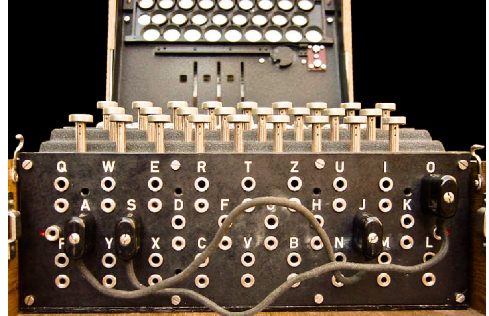
著名的Engima Machine就用到了 Plugboard 来进行“编程”，图片来源
可以看到，无论是“不可编程”还是“不可存储”，都会让使用计算机的效率大大下降。而这个对于效率的追求，也就是“存储程序计算机”的由来。
于是我们的冯祖师爷，基于当时在秘密开发的 EDVAC 写了一篇报告First Draft of a Report on the EDVAC，描述了他心目中的一台计算机应该长什么样。这篇报告在历史上有个很特殊的简称，叫First Draft，翻译成中文，其实就是《第一份草案》。这样，现代计算机的发展就从祖师爷写的一份草案开始了。
First Draft里面说了一台计算机应该有哪些部分组成，我们一起来看看。
首先是一个包含算术逻辑单元（Arithmetic Logic Unit，ALU）和处理器寄存器（Processor Register）的处理器单元（Processing Unit），用来完成各种算术和逻辑运算。因为它能够完成各种数据的处理或者计算工作，因此也有人把这个叫作数据通路（Datapath）或者运算器。
然后是一个包含指令寄存器（Instruction Reigster）和程序计数器（Program Counter）的控制器单元（Control Unit/CU），用来控制程序的流程，通常就是不同条件下的分支和跳转。在现在的计算机里，上面的算术逻辑单元和这里的控制器单元，共同组成了我们说的 CPU。
接着是用来存储数据（Data）和指令（Instruction）的内存。以及更大容量的外部存储，在过去，可能是磁带、磁鼓这样的设备，现在通常就是硬盘。
最后就是各种输入和输出设备，以及对应的输入和输出机制。我们现在无论是使用什么样的计算机，其实都是和输入输出设备在打交道。个人电脑的鼠标键盘是输入设备，显示器是输出设备。我们用的智能手机，触摸屏既是输入设备，又是输出设备。而跑在各种云上的服务器，则是通过网络来进行输入和输出。这个时候，网卡既是输入设备又是输出设备。
任何一台计算机的任何一个部件都可以归到运算器、控制器、存储器、输入设备和输出设备中，而所有的现代计算机也都是基于这个基础架构来设计开发的。
而所有的计算机程序，也都可以抽象为从输入设备读取输入信息，通过运算器和控制器来执行存储在存储器里的程序，最终把结果输出到输出设备中。而我们所有撰写的无论高级还是低级语言的程序，也都是基于这样一个抽象框架来进行运作的。
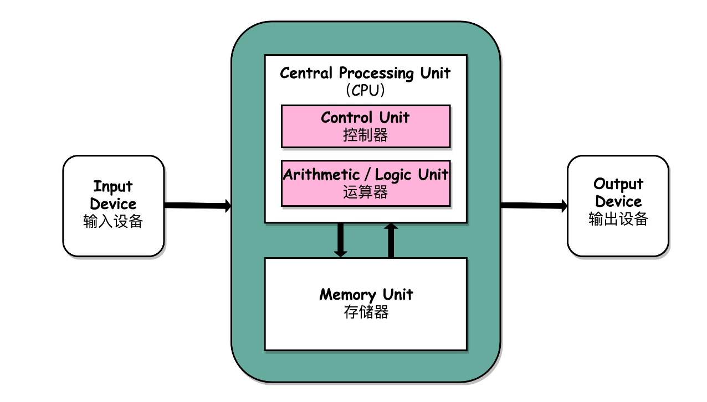
冯·诺依曼体系结构示意图，图片来源
冯·诺依曼架构（Von Neumann Architecture） 是冯·诺依曼和其他人提出的电子计算机通用架构。冯·诺依曼架构将通用计算机定义为以下 3 个基本原则：
- 1、采用二进制： 指令和数据均采用二进制格式；
- 2、存储程序： 一个计算机程序，不可能只有一条指令，而是由成千上万条指令组成的。指令和数据均存储在存储器中，而不是早期的插线板中，计算机按需从存储器中取指令和取数据；
- 3、计算机由 5 个硬件组成： 运算器、控制器、存储器、输入设备和输出设备。在最开始的计算机中，五个部件是围绕着运算器运转的，这使得存储器和 I/O 设备之间的数据传送也需要经过运算器。 而现代计算机中，五个部件是围绕着存储器运转的，这使得存储器和 I/O 设备可以直接完成数据传送，而不需要经过 CPU。
在冯·诺依曼架构之前还有一个哈佛架构，现在说的比较少。两者的区别在于冯·诺依曼是将指令和数据存储在同一个存储器的不同位置，存在争用问题；而哈弗架构将指令和数据存储在不同存储器中，规避了争用问题，与 CPU L1 缓存将指令和数据分离的思想类似。
12.2 冯·诺依曼瓶颈
冯·诺依曼瓶颈的概念最早由 John Backus 在 1977 年的图灵奖领奖演讲中提出： 由于 CPU 和存储器之间共享同一个系统总线，并且 CPU 和存储器之间存在巨大的速度差，导致 CPU 需要不断地被迫等待数据读取或写入到存储器，因此遏制了 CPU 的吞吐量
要从根本上解决冯·诺依曼瓶颈，还是只能重新构建一套新的计算机体系，例如生物计算机、量子计算机。不过，目前它们都还处在非常原始的阶段。现代计算机体系只能采用优化策略来减弱冯·诺依曼瓶颈的影响。
12.3 总结
如果说图灵机描述的是计算机的抽象模型，那么冯·诺依曼架构则是对图灵机这个抽象模型的实现架构。 冯诺依曼架构确立了现代电子计算机的基础和结构，学习计算机组成原理，其实就是学习和拆解冯诺依曼架构。
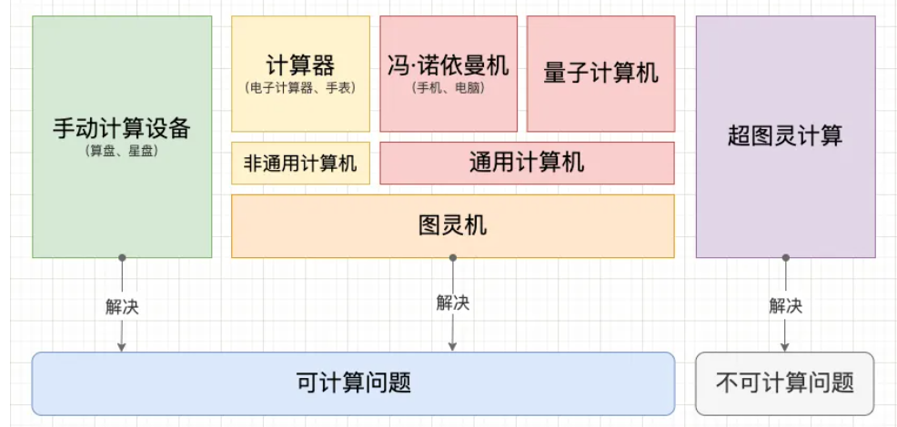